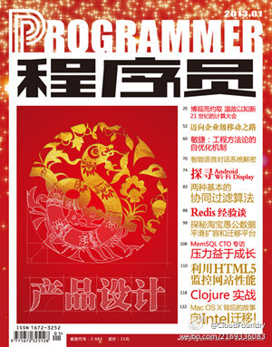

手机上装过用于拼车叫车的PickRide应用，这个应用经常崩溃，连一条基本搭车路线都建立不成，按照反馈耐心地等待升级到2.0版，靠，一样地滥。其CEO叶先生整日在微博上评论时政，不见对公司经营或者产品的内容。如果我是投资者，这种公司一定不会投的，而作为用户，就是用脚投票。

Ada李力
2013-01-04


Ada李力
2013-01-04
这是历时三个月的#OpenStack#中国行，足迹走过中国8座城市，有超过700人参与现场的讲座和互动，参与义务演讲的讲师超过30人，整理出的15页报告。 对要举办多城市社区活动的组织者来说，这篇报告中提供的数据和经验，会是个很好的参考。
---:抱歉，作者已设置仅展示半年内微博，此微博已不可见。


Ada李力
2013-01-04
姣姣学校的舞蹈老师是位男性，经常在学校的各种文艺表演中看到他的翩翩身影。对于会在今年各种年会中成为保留节目的“骑马舞”，他对自己的学生宣称：他死也不会跳。- 偶对这个老师好感大增。
Ada李力
2013-01-04
看来授权要小心，而且要时常检查。//@吴杰_FUJITSU:修改了密码冻结了所有授权应用，删除了垃圾微博，谢谢@Ada李力 提醒。 #新浪微博的安全机制还是有待加强，尤其是授权应用这块要规范话啊。
Ada李力
2013-01-04
这种内容还是来自原厂工程师的更给力啊。
@Pivotal中国官方微博:
本月出版的《程序员》杂志将刊登EMC中国研究院高级研究猿 @Layne_Peng 的文章“Cloud Foundry技术全貌及核心组件分析”。2013年我们会以专栏连载的方式在程序员杂志连续刊登Cloud Foundry的深度技术文章，期待各位粉丝关注捧场，也欢迎社区和企业牛人主动投稿。@EMC中国研究院 @CSDN云计算 @程序员杂志
- 